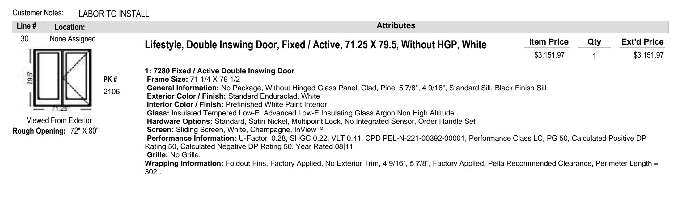
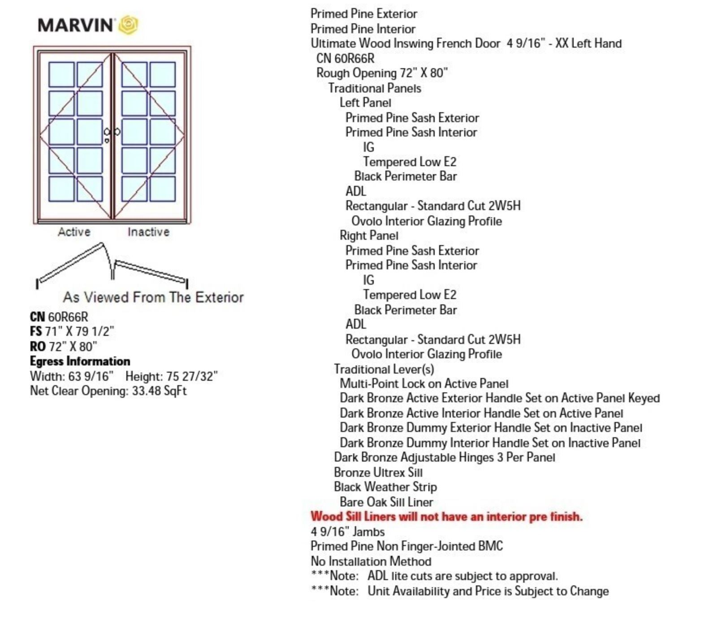
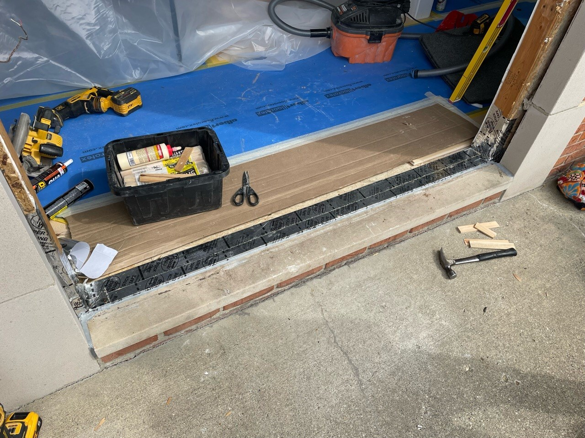
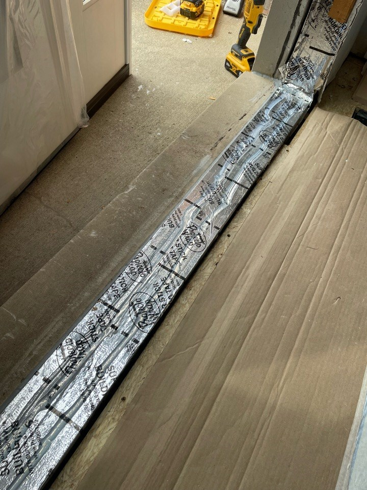
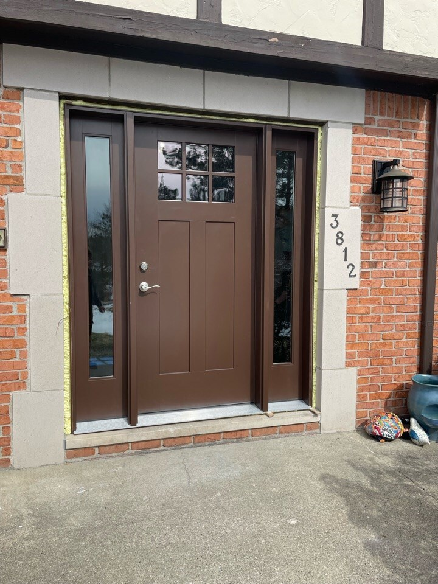

Exterior Doors
Exterior doors come in many configurations: single, double, with transoms or sidelights, fire-rated, self-closing, inswing, and outswing. Unlike windows, most doors lack a nailing flange, so proper sill flashing and sealing require extra attention.
Quick Reference
- Pull trim to measure the rough opening; note swing direction and jamb depth
- Use the Door Order Form and don't forget the handle
- Flash with a sill pan first, set door in a bed of sealant, tape sides then top
- Air-seal from interior with low-expansion foam or backer-rod + sealant
- Code hot-spots: garage-to-house doors require fire rating, self-closing, and self-latching (2021 IRC)
Materials and Tools
- Tape measure and level
- Pry bar, hammer, 3" screws, trim nails
- Sill-pan flashing tape or metal
- Silicone sealant
- Shims
- Low-expansion foam OR backer-rod and sealant
- Drip cap (if not integral)
- Interior casing, exterior trim or coil stock, paint/caulk
- Door handle and lockset
Process
- Ordering
- Remove a trim board to record the rough opening dimensions
- Note the swing direction and jamb depth
- Confirm door style with the client
- Select a door handle
- Request a quote from a dealer
- Review pricing and specifications with the client
- Place the order once approved
- Installation
- Protect finished surfaces
- Remove exterior trim and interior trim if necessary
- Remove the old door
- Install sill pan flashing
- Set the door:
- Confirm sill is level
- Verify door sill bottom is flat and will seal against the sill pan
- Set door in a bed of silicone (slope sill and add a back-dam if sealant is impractical)
- Fasten bottom corners
- Plumb the sides and fasten top corners
- Tape exterior sides then top
- Install the door handle
- Finishing
- Air-seal from the interior:
- Spray low-expansion foam between door frame and rough opening, OR
- Install backer rod with sealant, OR
- Tape the frame to the rough opening with insulation behind
- Install interior casing
- Install exterior drip cap (if not integral)
- Install exterior trim or coil wrap
- Paint and caulk as needed
- Air-seal from the interior:
Best Practices
- Flash the opening and take photos during installation to verify proper sealing
- Doors often lack a nailing flange, so pay extra attention to sill pan installation and sealant
- Slope the rough sill to create drainage before flashing
- Add a back-dam on the interior sill edge to stop inward leaks
Inspections
Doors separating attached garages from living spaces have fire rating requirements. The 2021 IRC requires these doors to be self-closing and self-latching.
Client Communication
- Advise that interior trim may not survive demo; budget for replacement
- Pets must be secured while the house is open during replacement
- The new door may require shoe moulding or interior threshold trim if the threshold is thicker or doesn't align with existing flooring
- The builder should determine the size and fit and guide the client on a style that meets their goals
Door Specification Examples
Example Double Door Quote
This is an example of a double door quote with a fixed and active swing panel.


Sill Flashing and Installation



Resources
Last revised: 01/29/2026
Feedback on this page
Spot an error or have a suggestion? Send a quick note. Name and email are optional.